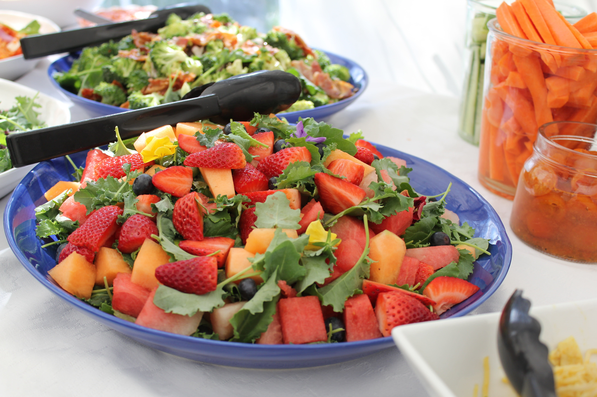

Home
Fruit Bowl Recipe

Description
Fruit bowls are very nice! With enough fruits, you get a good variety of flavors and textures all in one bowl. This recipe is my favorite way of making a fruit bowl, containing all my favorite fruits.
Ingredients
- 1 cup strawberries
- 1 cup blueberries
- 1 cup raspberries
- 1 mango
- 2 bananas
- 1/2 pineapple
Steps
- Wash the berries, and pour them directly into a large bowl.
- Cut the mango in half and remove the seed, then dice the mango into medium sized cubes.
- Peel the bananas and cut them into thin slices.
- Cut the pineapple in half and dice the pineapple.
- Add the banana, mango and pineapple to the bowl and mix the fruits by shaking the bowl.
- Serve in a glass cup or enjoy it directly from the bowl!